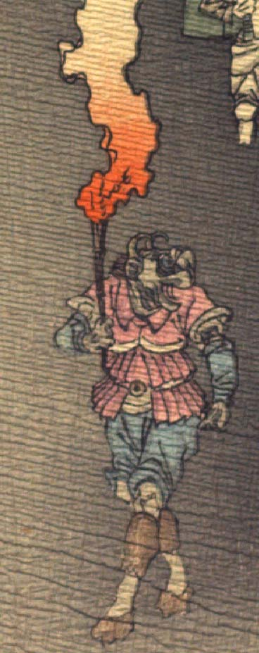

浅黒い肌の鬼。頭部は牛のようで、前向きに曲がった角が2本生えている。角の根元に耳があり、鼻先は突き出ている。異国風の赤い上着と青い股引、茶色い脚絆をまとい、茶色い靴のようなものをはいている。右手で松明を掲げ、歩いている。
著作者：J.Dautremer／出典：親書誌：U426_nichibunken_0123：Le vieillard et les démons／日付：2006／資源識別子：U426_nichibunken_0123_0002_0001
Copyright (c)2010- International Research Center for Japanese Studies, Kyoto, Japan. All rights reserved.